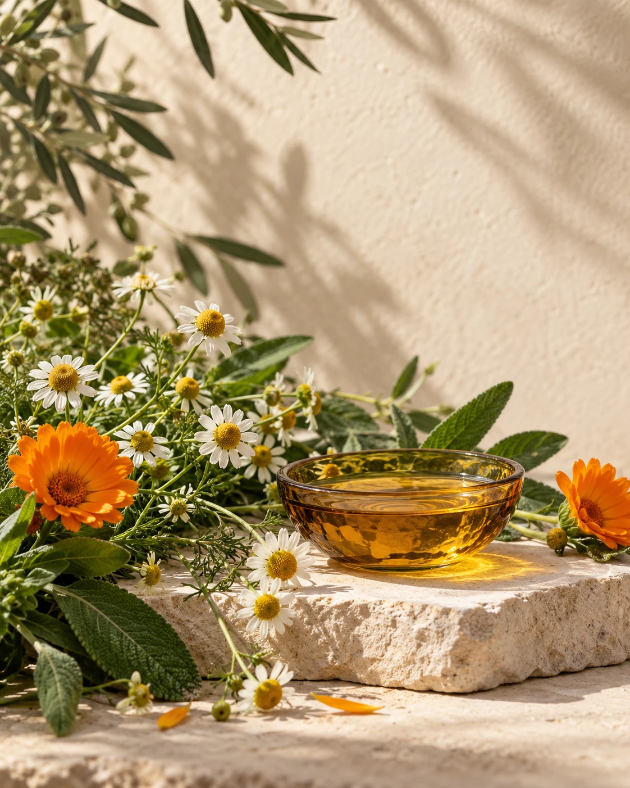
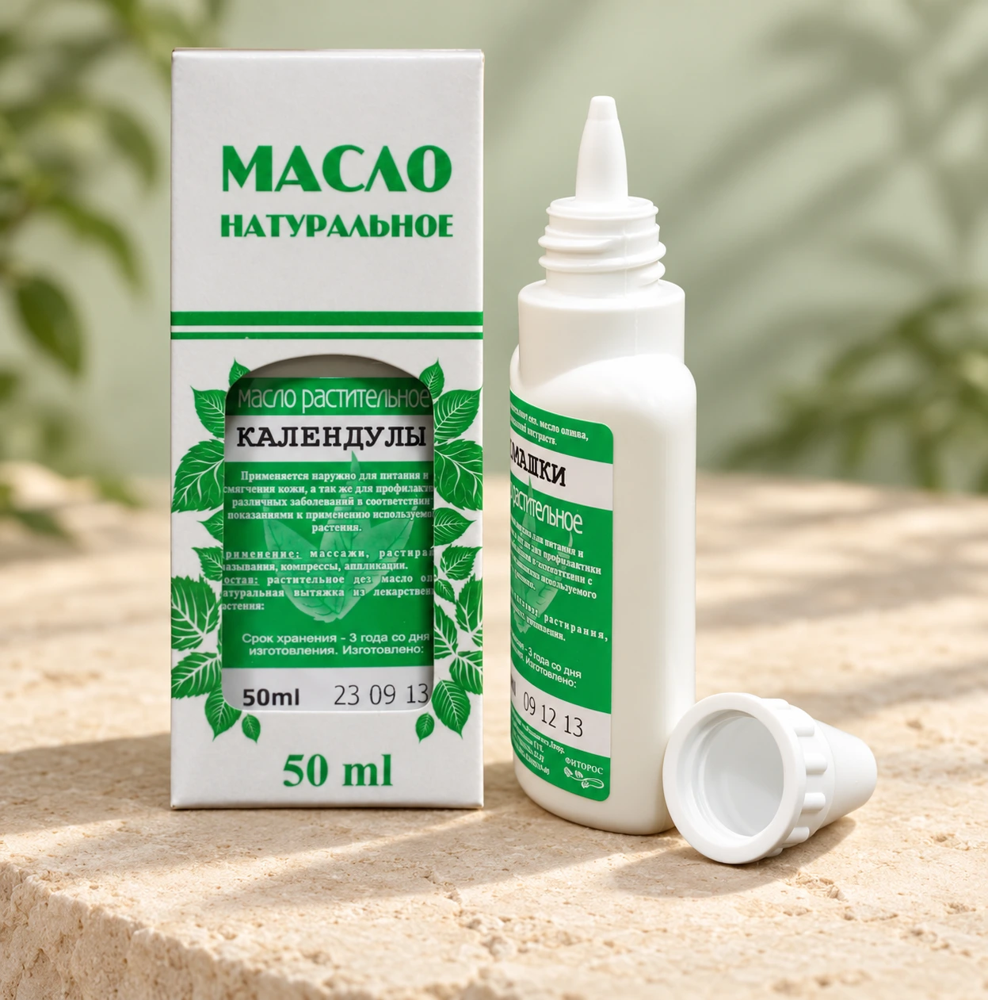

Растительное сырьё
В основе направления компании — работа с растениями и их компонентами.
Создаём продукцию на основе растительного сырья. Соединяем опыт работы с растениями и технологии производства.
От идеи растения —
к продукту для повседневной заботы.

Масла, средства гигиены и детский уход.
Найдите своё направление и узнайте
больше о продукции «Фиторос».
Показана часть ассортимента. Фотографии обработаны для теста оформления; исходники доступны в карточках.
Запросить полный ассортимент ↗
За каждым продуктом — путь от растительного сырья до готовой формулы.
Компания «Фиторос» начала работу в 1998 году. Одним из ключевых направлений стало развитие технологий обработки лекарственных растений и получения растительных экстрактов.
Сегодня знакомство с брендом — это знакомство с его продукцией, подходом к разработке и возможностями сотрудничества.
Понятная логика разработки:
от выбора основы — к готовому продукту.
В основе направления компании — работа с растениями и их компонентами.
Получение экстрактов и разработка способов обработки растительного сырья.
Работа над рецептурой, формой выпуска и задачами конкретного продукта.
Собственные линейки и возможности выпуска под маркой заказчика.
От знакомства с ассортиментом до обсуждения собственного продукта. Найдём подходящий формат сотрудничества.
Обсудим ассортимент, поставки и возможности долгосрочного сотрудничества.
На действующем сайте представлены возможности контрактного производства под собственной торговой маркой.
Состав работ, минимальная партия и сроки определяются после обсуждения проекта.
Напишите на fitoros@mail.ru или позвоните по номеру +7 (863) 236-19-91. Укажите интересующее направление — масла, средства гигиены, детский уход или сотрудничество.
На сайте компании описано направление контрактного производства. Для обсуждения конкретного проекта расскажите о продукте, предполагаемом объёме и желаемой упаковке. Актуальные возможности подтвердит команда компании.
Состав, назначение, ограничения и способ применения следует уточнять по действующей маркировке и документации конкретного продукта. В этом макете представлены обзорные карточки.
Здесь не указаны неподтверждённые цены и объёмы. Запросите актуальное предложение напрямую у компании — условия зависят от ассортимента и формата сотрудничества.
Расскажите, что вас интересует.
Подготовим письмо для команды «Фиторос».
Будем рады встрече. Найдите нас на карте или постройте маршрут в Яндекс Картах.